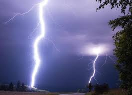

<!doctype html>

<html lang="en">
	<head>
		<meta charset="utf-8">

		<title>Map example - 1</title>
		<meta name="description" content="The HTML5 Herald">
		<meta name="author" content="SitePoint">
		<link rel="stylesheet" href="node_modules/leaflet/dist/leaflet.css" />

		<!-- подключение скрипта библиотеки leaflet -->
		<script src="js/leaflet.js"></script>
	</head>
	<body>
		<!-- контейнер с картой -->
		<div id='map' style="width: 100%; height: 400px;" ></div>

		<script>

			/*
				При создании слоя карты 1 параметр (url) должен быть скопирован с раздела [Use style in GIS apps] в админке mapbox,
				ДЛЯ ОТОБРАЖЕНИЯ КАРТЫ НА САЙТЕ нужно переименовать переменные {level}/{col}/{row} на {z}/{x}/{y}
			*/

			// создание слоя с картой
			var mapLayer1 = L.tileLayer('https://api.mapbox.com/styles/v1/alexanderhontariev/cj1z0flyl001c2sp7abqkfq2u/tiles/256/{z}/{x}/{y}@2x?access_token=pk.eyJ1IjoiYWxleGFuZGVyaG9udGFyaWV2IiwiYSI6ImNqMXl4NmNoajAwMHIzMnVyb2NjaHY0YW8ifQ.QwQ8J9YlNuKJvIBL8pkcIA', {
				attribution: 'some attribution :)',
				prefix: false
			});

			// создание еще одного слоя с картой
			var mapLayer2 = L.tileLayer('https://api.mapbox.com/styles/v1/mapbox/outdoors-v10/tiles/256/{z}/{x}/{y}@2x?access_token=pk.eyJ1IjoiYWxleGFuZGVyaG9udGFyaWV2IiwiYSI6ImNqMXl4NmNoajAwMHIzMnVyb2NjaHY0YW8ifQ.QwQ8J9YlNuKJvIBL8pkcIA', {
				attribution: 'some attr',
				prefix: false
			});

			// инициализация карты
			var map = L.map(/* map id */ 'map', /* obj options */ {
					center: [50.450104, 30.523397], /* координаты майдана независимости */
					zoom: 9,
					minZoom:3,
					maxZoom:10,
				/*	maxBounds:([[20, -30],[70,90]]), */
					layers: [mapLayer1] /* выбранный слой, который отображается по умолчанию */
			});

			/* создание контрола изменения слоев */
			var layesList = {
					"желтый": mapLayer1,
					"стандартный": mapLayer2
			};

			/* добавление его на карту */
			L.control.layers(layesList).addTo(map);


			/* СОЗДАНИЕ И ДОБАВЛЕНИЕ МАРКЕРОВ НА КАРТУ */

			// 1 создание слоя маркеров
			var markerGroup = L.layerGroup();
			markerGroup.clearLayers();

			// 2 конфигурация маркера
			var latLong = [50.370655, 30.288467];
			var markerProps = {
				icon: L.icon({
				    iconUrl: 'images/light.png',
				    iconSize: [40, 40]
				    /*
					    iconAnchor: [22, 94],
					    popupAnchor: [-3, -76],
					    shadowUrl: 'my-icon-shadow.png',
					    shadowSize: [68, 95],
					    shadowAnchor: [22, 94]
				    */
				})
			};

			// 3 добавление маркера в группу
			var marker = L.marker(latLong, markerProps)
			marker.bindPopup(
					'<div class="map-popup">' +
						'' +
						'<ul>' +
							'<li>молния между тучами</li>' +
							'<li>тип заряда: отрицательный</li>' +
							'<li>мощность заряда: 120000</li>' +
							'<li>дата: 23.11.2017</li>' +
							'<li>время: 11:22</li>' +
						'</ul>' +
					'</div>'
				);

			marker.addTo(markerGroup);

			/*
				[] - list of markers

				foreach(var mData in []) {
					var latLong = [mData.lat, mData.long];
					var markerProps = {
						icon: L.icon({
						    iconUrl: 'images/marker.gif',
						    iconSize: [19, 19]
						})
					};

				var marker = L.marker(latLong, markerProps);
				marker.bindPopup(
					'' +
					'<ul>' +
						'<li>молния между тучами</li>' +
						'<li>тип заряда: отрицательный</li>' +
						'<li>мощность заряда: 120000</li>' +
						'<li>дата: 23.11.2017</li>' +
						'<li>время: 11:22</li>'
					'</ul>'
				);

				} end foreach
			*/

			// 4 добавление группы на карту
			markerGroup.addTo(map);

			/* -------------------------------------------------------------- */
			var popup = L.popup();

			function onMarkerClick(e) {
			    popup
			        .setLatLng(e.latlng)
			        .setContent("You clicked the map at " + e.latlng.toString())
			        .openOn(mymap);
			}

			mymap.on('click', onMapClick);

		</script>
	</body>
</html>